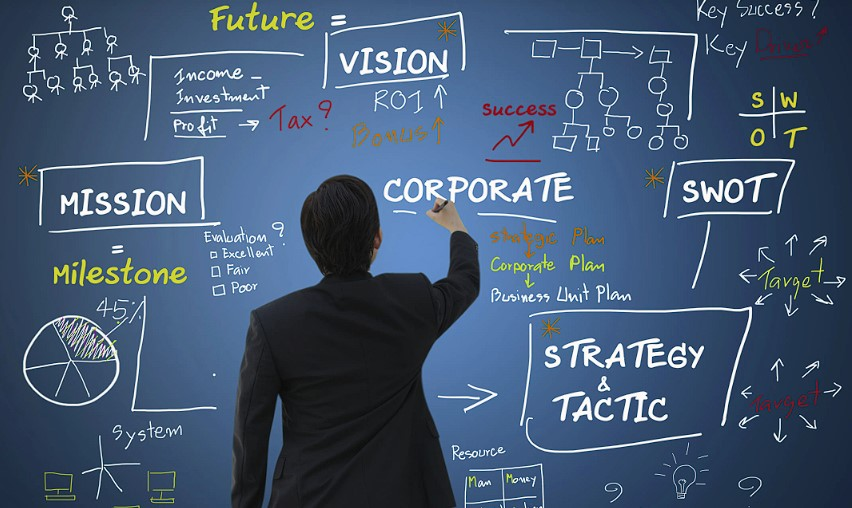

Gestión Empresarial y Toma de Decisiones en las Organizaciones
Objetivo
Optimizar la gestión empresarial y la toma de decisiones en las organizaciones a través de la implementación de estrategias basadas en datos, mejores prácticas de liderazgo y tecnología avanzada para mejorar la eficiencia operativa, la competitividad y la satisfacción del cliente.

Introducción
En el entorno empresarial contemporáneo, la capacidad de gestionar eficientemente una organización y tomar decisiones informadas es crucial para su éxito y sostenibilidad. La gestión empresarial abarca una amplia gama de actividades, desde la planificación y organización hasta el liderazgo y el control, t odas ellas destinadas a alcanzar los objetivos estratégicos de la organización. En este contexto, la toma de decisiones se erige como una función central, ya que determina la dirección que seguirá la empresa y cómo se abordarán los desafíos y oportunidades del mercado.
Desarrollo
1. ¿Qué es la Gestión Empresarial?
La gestión empresarial se refiere a las actividades y estrategias utilizadas para dirigir y administrar una empresa de manera efectiva. Esto incluye la planificación, organización, dirección y control de los recursos y operaciones de la empresa para alcanzar sus objetivos.

2. ¿Qué es la Planificación Estratégica en una Empresa?
La planificación estratégica es el proceso mediante el cual una organización define su dirección y toma decisiones sobre la asignación de recursos para perseguir esta estrategia. Este proceso implica el establecimiento de objetivos, la evaluación de las condiciones internas y externas, y la formulación de estrategias para alcanzar los objetivos a largo plazo.
3. ¿Qué es la Toma de Decisiones?
La toma de decisiones es el proceso de seleccionar una opción entre varias alternativas. En el contexto empresarial, esto puede incluir decisiones operativas, tácticas y estratégicas que afectan el funcionamiento y el éxito de la organización. Este proceso involucra la identificación de un problema o oportunidad, la recopilación de información relevante, la evaluación de alternativas y la selección de la mejor opción.

4. La Importancia de la Toma de Decisiones
La toma de decisiones es crucial en cualquier organización porque:
- Afecta a todos los niveles de la empresa.
- Impacta la eficiencia y competitividad.
- Es esencial para el funcionamiento coordinado de la organización.
- Permite una mejor gestión de recursos y riesgos.

5. ¿Cómo Funciona la Toma de Decisiones en una Organización?
El proceso de toma de decisiones en una organización generalmente sigue estos pasos:
- Identificación del problema o la oportunidad.
- Recopilación de información relevante.
- Generación de alternativas.
- Evaluación de las alternativas.
- Selección de la mejor opción.
- Implementación de la decisión.
- Seguimiento y evaluación de los resultados.

Apoyo didactico
Aqui se muestran algunos recursos de apoyo para el fortalecimiento del aprendizaje
¿Qué es la gestión empresarial?
Conclusión
La gestión empresarial efectiva y la toma de decisiones informadas son cruciales para el éxito y la sostenibilidad de las organizaciones en un entorno empresarial dinámico y competitivo. Implementando estrategias basadas en datos, optimizando procesos y desarrollando habilidades de liderazgo, las organizaciones pueden mejorar su rendimiento y alcanzar sus objetivos estratégicos.
Actividad Practica
Preguntas de reflexion
¿Cómo determinas cuándo es el momento adecuado para tomar una decisión difícil?
¿En qué medida consideras las consecuencias a largo plazo de tus decisiones inmediatas?
¿Qué eventos recientes en tu carrera te han hecho replantear tu enfoque hacia la gestión y la toma de decisiones?
¿Qué roles o modelos o mentores influyen en tu enfoque hacia la gestión y la toma de decisiones, y cómo?
¿Qué experiencias personales han moldeado tu enfoque hacia la planeación estratégica?
Actividad Evaluativa
Ahora pondremos a prueba tus conocimientos
Presiona aqui para realizar la prueba